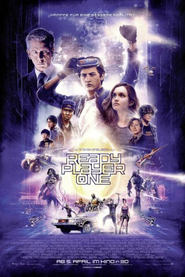

#9264 Ready Player One
 gesehen am 06.09.2018
gesehen am 06.09.2018
 
 IMDB-Wertung: 7.6 / 10
IMDB-Wertung: 7.6 / 10  Tomatometer: 72
Tomatometer: 72  Metascore: 64
Metascore: 64 
Im Jahr 2045 spielt sich das Leben vieler Menschen auf der heruntergekommenen Erde zum größten Teil nur noch in der OASIS ab. Das ist eine vom ebenso genialen wie exzentrischen Programmierer und Web-Designer James Halliday (Mark Rylance) erfundene virtuelle Welt, die mehr als die düstere Realität zu bieten hat. Die meiste Zeit seines jungen Lebens verbringt auch der 18-jährige Wade Watts (Tye Sheridan) damit, mit seinem Avatar Parzival in diese Welt einzutauchen und zu versuchen, die Aufgaben zu lösen, die Halliday vor seinem Tod in der OASIS hinterlassen hat. Demjenigen, der als erster alle Herausforderungen meistert, winkt nämlich unermesslicher Reichtum und die Kontrolle über die OASIS. Bislang sind Wade und seine Freunde zwar stets schon an der ersten Aufgabe gescheitert, doch sie geben nicht auf – ebenso wenig wie der skrupellose Konzernchef Nolan Sorrento (Ben Mendelsohn), der sich OASIS unbedingt unter den Nagel reißen will…
Jahr: 2018
Dauer: 139 Minuten
FSK: 12
Land: USA Studio: Warner Bros.Tonspuren: DTS - ,
Untertitel: Deutsch,
Auflösung: 1080p (1920x808) Größe: 11673 MB
Genre: Action, Sci-Fi, Abenteuer
Regisseur:  Steven Spielberg
Steven Spielberg
Drehbuch: Zak Penn
Soundtrack: Alan Silvestri
Darsteller:
 Tye Sheridan als Parzival / Wade
Tye Sheridan als Parzival / Wade Olivia Cooke als Art3mis / Samantha
Olivia Cooke als Art3mis / Samantha Ben Mendelsohn als Sorrento
Ben Mendelsohn als Sorrento- Lena Waithe als Aech / Helen
 T.J. Miller als I-R0k
T.J. Miller als I-R0k Simon Pegg als Curator / Ogden Morrow
Simon Pegg als Curator / Ogden Morrow Mark Rylance als Anorak / Halliday
Mark Rylance als Anorak / Halliday- Philip Zhao als Sho
- Win Morisaki als Daito
 Hannah John-Kamen als F'Nale Zandor
Hannah John-Kamen als F'Nale Zandor Ralph Ineson als Rick
Ralph Ineson als Rick Susan Lynch als Alice
Susan Lynch als Alice Clare Higgins als Mrs. Gilmore
Clare Higgins als Mrs. Gilmore Laurence Spellman als Lame Tattoo Guy (Reb)
Laurence Spellman als Lame Tattoo Guy (Reb) Perdita Weeks als Kira
Perdita Weeks als Kira Kit Connor als Reb Kid
Kit Connor als Reb Kid- Leo Heller als Reb Kid
- Antonio Mattera als Reb Kid
- Ronke Adekoluejo als Sorrento's Assistant
- Gareth Mason als Chubby Guy
 Lynne Wilmot als Pole Dancer
Lynne Wilmot als Pole Dancer- Gem Refoufi als Pretty Naked Girl Body Double
- Jane Leaney als Queen of Cats / Bathroom Zombie / Mocap Core Cast
- Elliot Barnes-Worrell als Sixer #1
- Asan N'Jie als Sixer #5 (Last Sixer)
- Robert Gilbert als Andrew (Sorrento's Head of Security)
- Stephen Mitchell als Police Officer
 Letitia Wright als Reb (Safe House)
Letitia Wright als Reb (Safe House)- Kae Alexander als Reb (Safe House)
- Josh Jefferies als Mocap Core Cast / Sixer Instructor
 Michael Wildman als Sixer Drill Instructor
Michael Wildman als Sixer Drill Instructor- Turlough Convery als Chief Oology Expert
- Joe Hurst als Oology Expert
- Eric Sigmundsson als Oology Expert
- James Dryden als Oology Expert
- Rona Morison als Oology Expert
- Tom Turner als IOI Board Member
- Isaac Andrews als Halliday 7 Years Old
 Neet Mohan als Snacks (Bootsuit Commercial)
Neet Mohan als Snacks (Bootsuit Commercial)- Georgie Farmer als Kid (Bootsuit Commercial)
- Kathryn Wilder als Female Gamer (Bootsuit Commercial)
 Mckenna Grace als Elementary Kid
Mckenna Grace als Elementary Kid- Lulu Wilson als Elementary Kid
- Adolfo Alvarez als Elementary Kid
- Alonso Alvarez als Elementary Kid
- Jadah Marie als Elementary Kid
- Dallas Young als Elementary Kid
- Armani Jackson als High School Kid
- Britain Dalton als High School Kid
 Jacob Bertrand als High School Kid
Jacob Bertrand als High School Kid
Datei: X:\2018(N-Z)\Ready Player One (2018, FSK12, 1920x808).mkv seit 20.07.2018
Festplatte: HD 2018(G-Z)-2019(A-Z)
 Es gibt insgesamt 172 Filme in der Gruppe '2018(N-Z)'
Es gibt insgesamt 172 Filme in der Gruppe '2018(N-Z)'